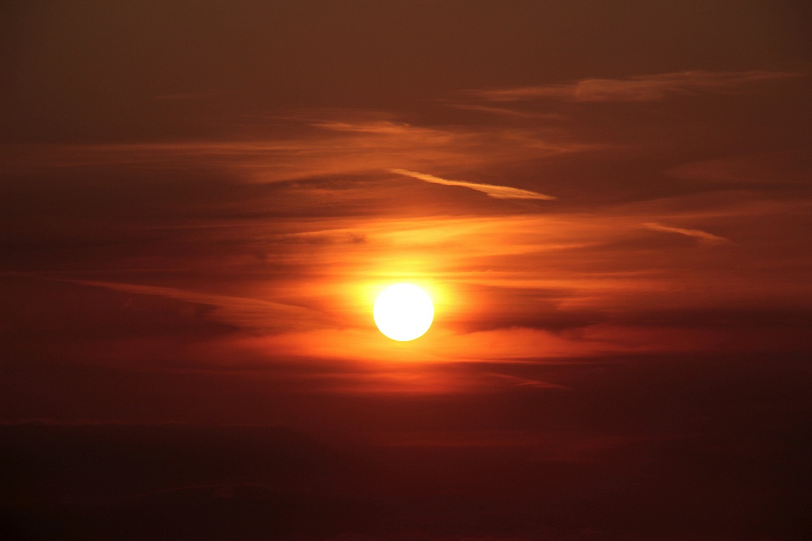

Сонце лежить у центрі Сонячної системи, де воно є найбільшим об’єктом. Він утримує 99,8% маси Сонячної системи і приблизно в 109 разів перевищує діаметр Землі — близько одного мільйона Земель може поміститися всередині Сонця.
Поверхня Сонця гаряча приблизно на 10 000 градусів за Фаренгейтом (5500 градусів за Цельсієм), тоді як температура в ядрі сягає понад 27 мільйонів F (15 мільйонів C), викликана ядерними реакціями. За даними NASA, потрібно було б вибухнути 100 мільярдів тонн динаміту щосекунди, щоб відповідати енергії, яку виробляє сонце.
Сонце є однією з понад 100 мільярдів зірок у Чумацькому Шляху. Він обертається на відстані приблизно 25 000 світлових років від галактичного ядра, обертаючись приблизно кожні 250 мільйонів років. Сонце відносно молоде, це частина покоління зірок, відомого як Населення I, яке відносно багате елементами, важчими за гелій. Старше покоління зірок називається Населенням II, і могло існувати більш раннє покоління Населення III, хоча представники цього покоління ще не відомі.
Сонце народилося приблизно 4,6 мільярда років тому. Багато вчених вважають, що Сонце та решта Сонячної системи утворилися з гігантської обертової хмари газу та пилу, відомої як сонячна туманність. Коли туманність руйнувалася через силу тяжіння, вона оберталася швидше й сплющувалась у диск. Велика частина матеріалу була витягнута до центру, щоб утворити сонце.

Магнітне поле Сонця зазвичай приблизно вдвічі сильніше за магнітне поле Землі. Однак він стає висококонцентрованим на невеликих ділянках, сягаючи в 3000 разів сильніше, ніж зазвичай. Ці перегини й повороти в магнітному полі розвиваються через те, що Сонце обертається швидше на екваторі, ніж у вищих широтах, і тому, що внутрішні частини Сонця обертаються швидше, ніж поверхня.